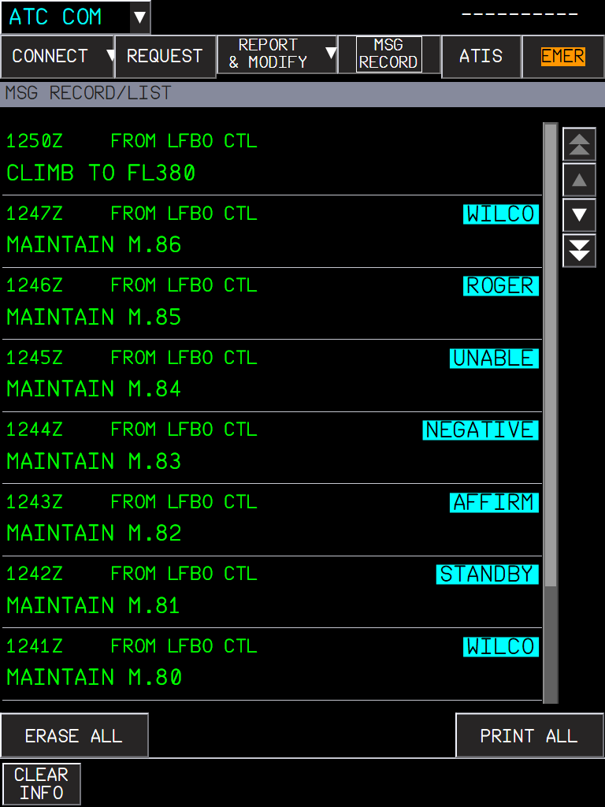

The A380 talks to ATC by datalink: the crew logs on to a center, sends requests and reports, receives clearances and answers them, and gets the airport ATIS as text. The FCOM describes the MFD ATC COM pages (DSC-46-10-20-30) and the SD MAILBOX (DSC-46-10-10-70). They are all built on their FCOM figures and connected to the FBW ATSU, the same datalink system as the A32NX DCDU.
| Page (header) | Use |
|---|---|
| CONNECT | Logon (NOTIFICATION), CONNECTION STATUS with ADS, MAX UPLINK DELAY. |
| REQUEST | Build a request from frames (climb, direct, offset, weather deviation, speed, clearances...) and send it to the mailbox. |
| REPORT & MODIFY | Position report, other reports, modify a prepared answer. |
| MSG RECORD | The record of the closed dialogues. |
| ATIS | Request and read the ATIS of three airports. |
| EMER | MAYDAY / PANPAN and the emergency reports. |
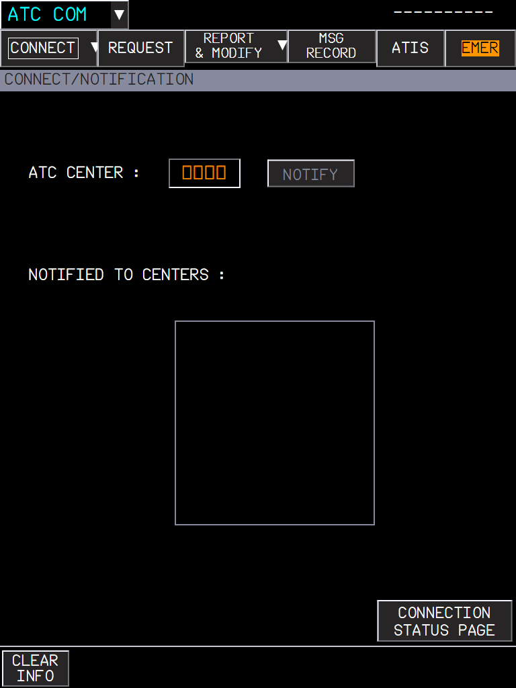
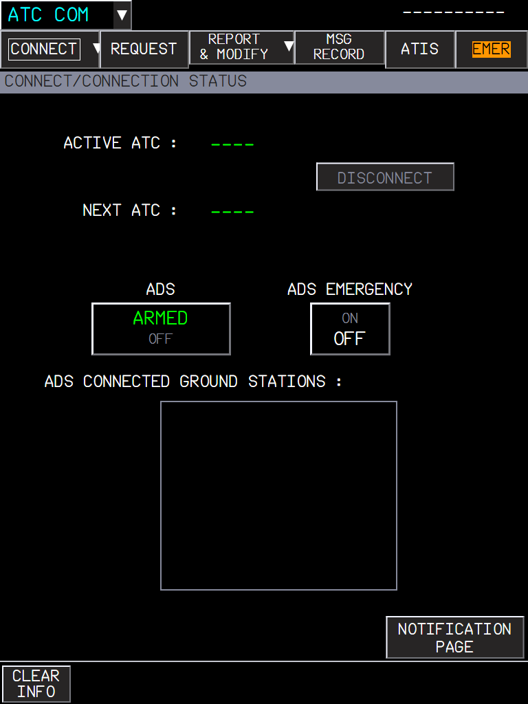
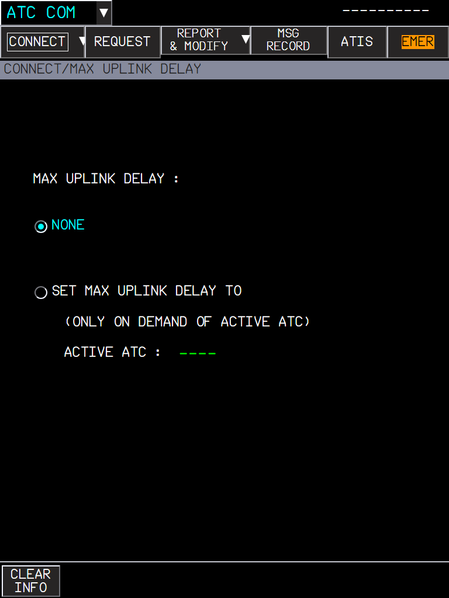
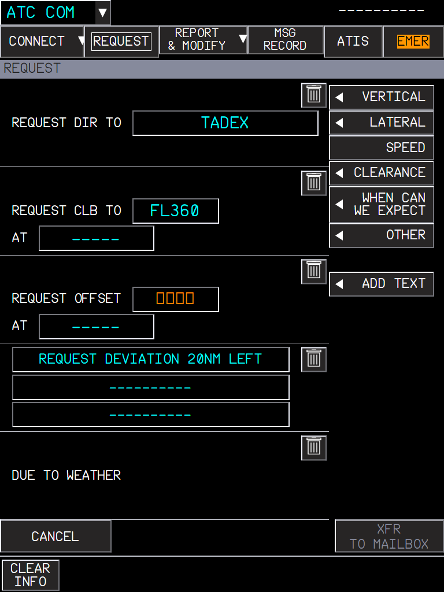
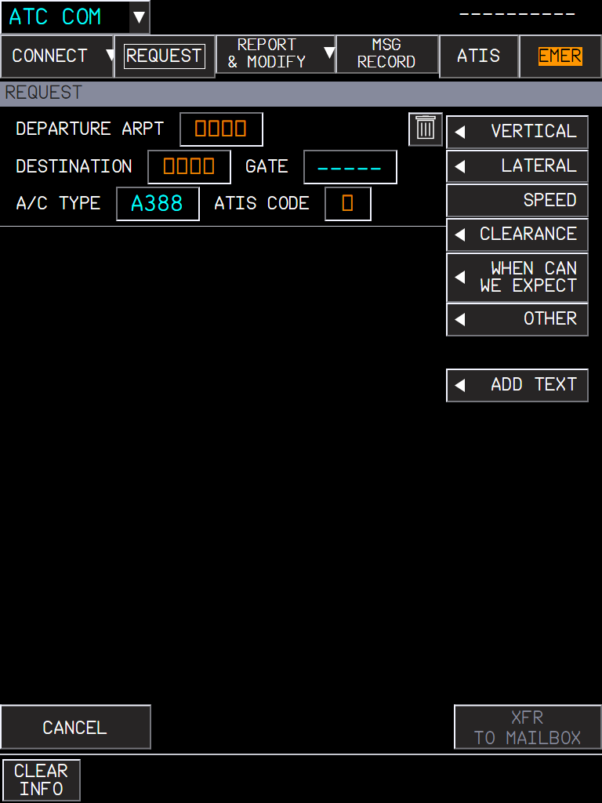
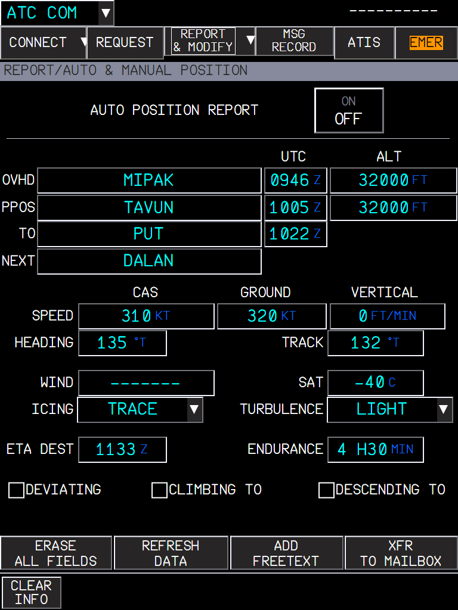
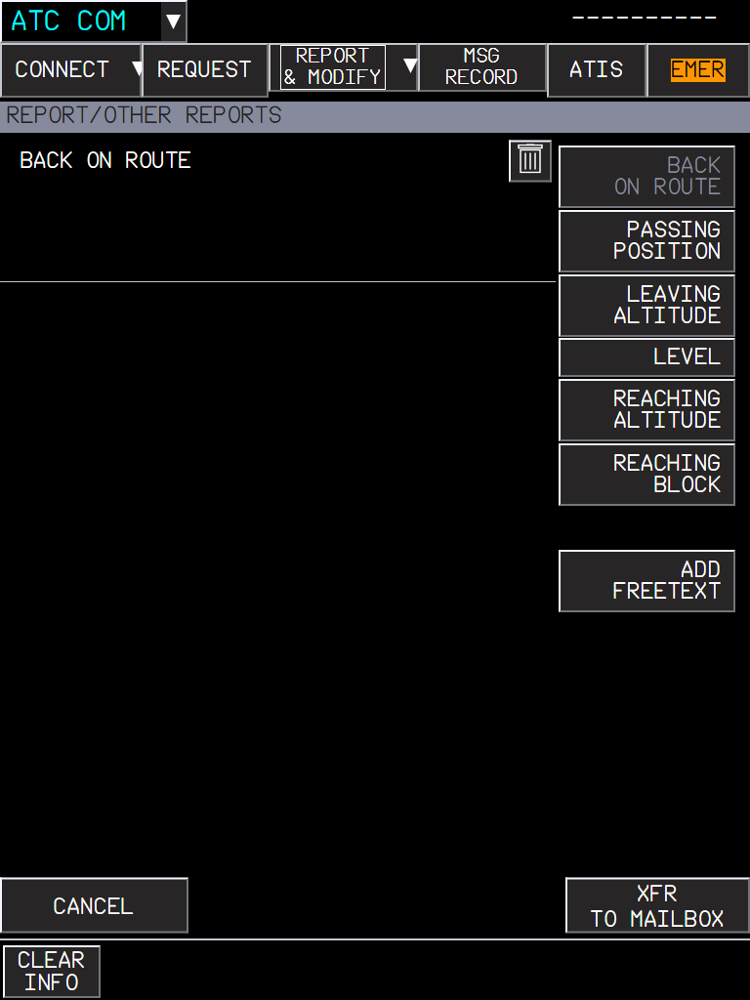
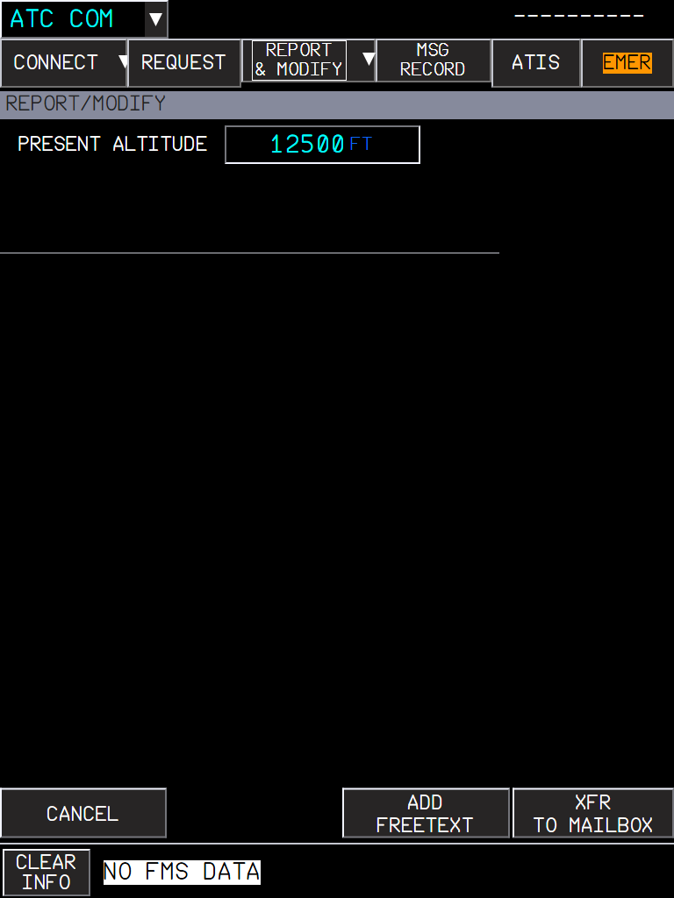
Every message to and from ATC goes through the mailbox at the bottom of the SD. It shows the active ATC, the ADS status, the message and the answer buttons the message expects.
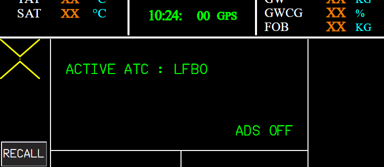
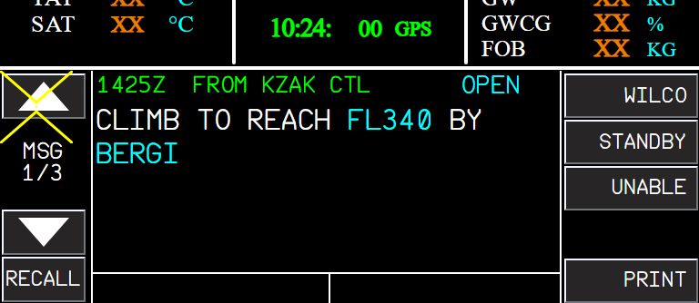
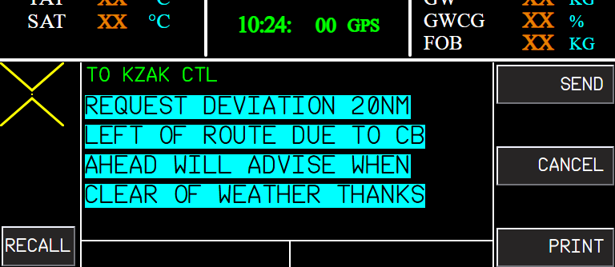
| The message expects | Buttons |
|---|---|
| WILCO / UNABLE (a clearance) | WILCO, STANDBY, UNABLE |
| AFFIRM / NEGATIVE (a question) | AFFIRM, STANDBY, NEGATIVE |
| ROGER (information) | ROGER |
| A departure or oceanic clearance | ACK / REFUSE |
UNABLE and NEGATIVE can add a reason (DUE TO WEATHER, A/C PERFORMANCE, TURBULENCE) and free text; MODIFY opens the answer on the MFD. The message colours follow the FCOM status legend.

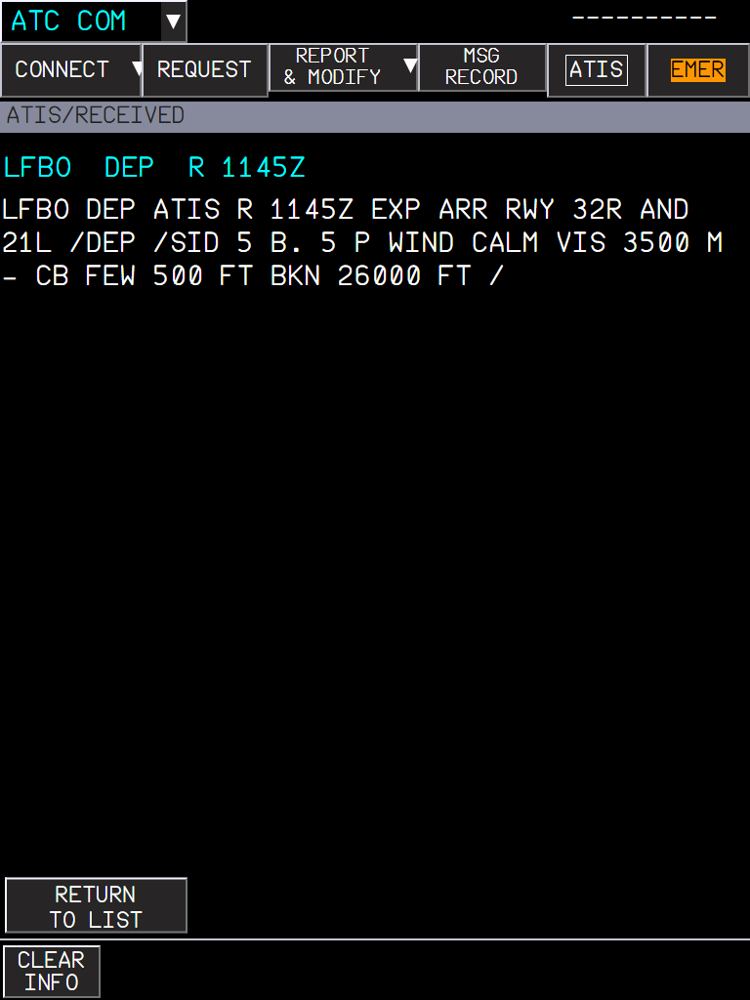
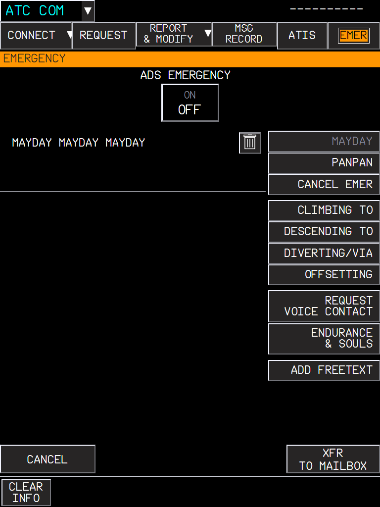
| Situation | What you should see |
|---|---|
| NOTIFY with no network set | NOTIFICATION FAILED. |
| Request with an empty mandatory field | XFR TO MAILBOX stays greyed. |
| Uplink received | Mailbox message with its answer buttons. |
| Answer sent | The dialogue closes and goes to MSG RECORD. |
| ATIS requested | The text appears in its area; a newer version replaces it (AUTO UPDATE). |
| MAYDAY sent | ADS EMERGENCY ON. |
| Limitation | Why | What to do |
|---|---|---|
| Needs an online datalink network. | ATC messages come from Hoppie, BeyondATC or SayIntentions through the flyPad ATSU settings. | Set the network in the flyPad. |
| No real ADS contracts. | The ATSU networks do not handle ADS-C; ADS ARMED / EMERGENCY is shown locally. | - |
| On this branch alone, every ATC COM PRINT says PRINTER NOT AVAIL. | Printing (ATIS, MSG RECORD, mailbox) is on core/printer, which builds on this branch. | - |
| Answering the uplinks of a live controller is not recorded as tested. | Tested in the sim: logon, MAYDAY and PAN PAN PAN downlinks, the ATIS, a route clearance uplink (LOAD-SEC3). The answer buttons were checked with harness messages. | Report any wrong answer element. |
| # | Do this | Expected result |
|---|---|---|
| 1 | A380X, any phase. flyPad > Settings > ATSU / AOC: ACARS provider set (Hoppie with its logon code, or BeyondATC running); RMP VHF3 in DATA; MFD FMS INIT: FLT NBR = your network callsign. Open MFD system menu > ATC COM. | Header CONNECT / REQUEST / REPORT & MODIFY / MSG RECORD / ATIS / EMER; the REQUEST page opens. |
| 2 | CONNECT > NOTIFICATION: type a center (with BeyondATC: the one in its Frequencies tab, COM tuned to it), press NOTIFY. | NOTIFYING, then the center in NOTIFIED TO CENTERS with the time (or NOTIFICATION FAILED). Once ATC accepts, CONNECTION STATUS shows the ACTIVE ATC and the SD mailbox shows it too. |
| 3 | ATIS page: in the first request area type an airport, press SEND REQUEST. | The ATIS text in the area; its time is the time written in the ATIS (e.g. 1151Z), ---- when it has none. Opening it shows ATIS RECEIVED with the full text. |
| 4 | REQUEST: VERTICAL menu > a climb frame, type FL360; add a second frame and delete it with the bin symbol. | The labels and fields of a line follow each other without overlap; the bin removes the frame. |
| 5 | Press XFR TO MAILBOX. | The request in the SD mailbox with SEND and CANCEL. |
| 6 | Press SEND in the mailbox (logged on). | The request is sent; when the dialogue closes it goes to MSG RECORD with its time. |
| 7 | EMER page: MAYDAY MAYDAY MAYDAY frame, XFR TO MAILBOX, SEND. | The MAYDAY is sent and CONNECT shows ADS EMERGENCY. BeyondATC answers NO MESSAGE HANDLING AVAILABLE FOR THIS REQUEST (not supported on its side). |
| 8 | Receive an uplink (from a live controller, or self-sent, see LOAD-SEC3 below) and answer it. | The message in the mailbox with the buttons it expects; after the answer the dialogue closes and goes to MSG RECORD. |
The INIT page FLT NBR field wrote the flight plan only: the field did not refresh and the entry never connected the datalink networks (FBW TELEX and the ACARS provider), so ATC logons and downlinks failed. And a message sent from the mailbox with no ATC center was dropped without a word. Now the FMS connects the networks whenever the flight number of the active flight plan changes, and the mailbox says SEND FAILED (A380 FCOM DSC-46-10-20-60).
The ATC COM pages send and receive through the aircraft datalink, which connects with the flight number of the active flight plan (FMS INIT, FLT NBR). It must be your callsign on the network (Hoppie, BeyondATC or SayIntentions: the one set in the flyPad, Settings > ATSU / AOC).
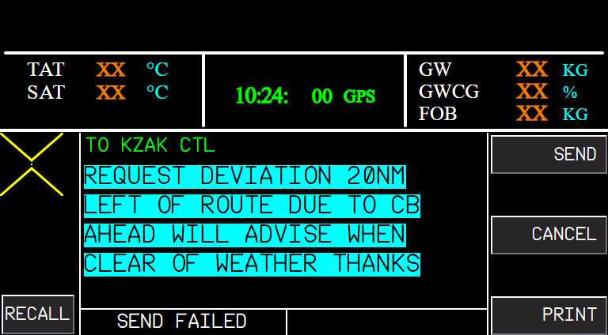
| # | Do this | Expected result |
|---|---|---|
| 1 | A380X on the ground, ACARS provider running and set in flyPad > Settings > ATSU / AOC. MFD FMS INIT: type the flight number in FLT NBR. | The field shows the new flight number at once. flyPad ATSU / AOC: the provider shows Connected (green). |
| 2 | ATC COM > CONNECT > NOTIFICATION: NOTIFY a center. | The logon goes out (NOTIFYING, then NOTIFIED TO CENTERS): the networks are connected. |
| 3 | Load a flight with the flight number already in the active flight plan (or activate a SEC plan with a flight number). | The datalink connects without typing the number again. |
| 4 | Without logon (no ACTIVE ATC), prepare a request (REQUEST, XFR TO MAILBOX) and press SEND in the SD mailbox. | SEND FAILED under the message (before: nothing happened). |
| 5 | If the connection is refused (for example FBW TELEX refuses the flight number), look at the FMS message area. | FMS DATALINK NOT AVAIL in white; it goes away once connected, and typing the flight number again retries. |
The ATC and company datalink of the aircraft (CPDLC logon, requests, messages, ATIS and METAR) goes through an ACARS provider you choose on the flyPad: Hoppie, BeyondATC or SayIntentions. The aircraft must find it, then connect your flight number to it.
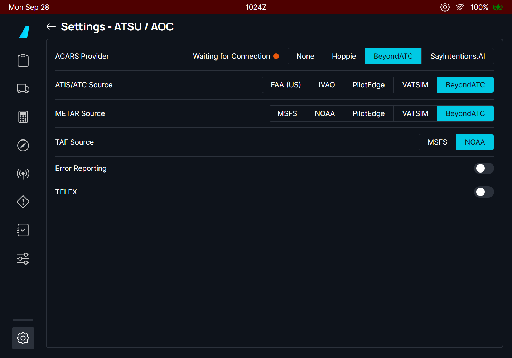
| # | Do this | Expected result |
|---|---|---|
| 1 | Load the aircraft with BeyondATC NOT running. flyPad > Settings > ATSU / AOC: ACARS provider BeyondATC. | "Waiting for Connection". |
| 2 | Wait more than 5 minutes, then start BeyondATC. | Within about a minute the status turns to "Connected" (green). The provider, ATIS and METAR settings are unchanged (not reset to NONE). |
| 3 | Enter the flight number before BeyondATC answers (restart the test with the flight number entered first). | The flight number is connected as soon as BeyondATC answers. |
| 4 | Close BeyondATC. | Within about a minute the status goes back to "Waiting for Connection". |
| 5 | Start BeyondATC again. | The aircraft connects the flight number again by itself; log on to the ATC center again (BeyondATC forgets the logon when it closes). |
Two mailbox problems found in the sim with BeyondATC:
| Situation | What you should see |
|---|---|
| Five downlinks prepared and cancelled, then a new one | The new downlink is shown with SEND / CANCEL; no FILE FULL. |
| More than five open downlinks | FILE FULL for the extra ones, until a place is freed (sent, closed or cancelled). |
| BeyondATC departure clearance "CLRD TO @CYVR@ RWY @06R@ ..." | CLRD TO CYVR RWY 06R ..., the values in blue, no triangles. |
| # | Do this | Expected result |
|---|---|---|
| 1 | A380X, logged on (ATC COM > CONNECT). Prepare a request (REQUEST, XFR TO MAILBOX) and press CANCEL in the SD mailbox. Do it six times. | Each new request shows SEND / CANCEL; FILE FULL never stays. |
| 2 | Then prepare an emergency (EMER, PANPAN frame, XFR TO MAILBOX) and SEND. | The PAN PAN PAN is sent (no FILE FULL). |
| 3 | With BeyondATC, ask for a departure clearance (REQUEST > CLEARANCE > DEPARTURE, XFR TO MAILBOX, SEND). | The clearance uplink in the mailbox: values (destination, runway, squawk...) in blue, no triangle symbols. |
| 4 | Close the dialogue and open ATC COM > MSG RECORD. | The recorded text has no @ characters. |
A route clearance or a crossing constraint received by CPDLC can be loaded into the FMS instead of being typed: the FCOM puts it in SEC 3, as a copy of the active flight plan with the clearance in it, for the crew to check and activate (A380 FCOM DSC-22-FMS-10-40, DSC-46-10-40). The mailbox has the LOAD-SEC3 key in the 4th button position, on the uplinks that can be loaded only; it stays after WILCO, with CLOSE.
| Uplink (CPDLC element) | What is loaded into SEC 3 |
|---|---|
| Route clearance: CLEARED TO ... VIA ... (UM79), CLEARED ... (UM80), AT ... CLEARED ... (UM83) | SID (not once airborne), airways, waypoints, lat/long points, STAR and a new destination. The rest of the en route part is replaced; a UM79 route ends at its clearance limit. |
| Crossing constraints (UM46 to 53, 55, 56, 58 to 61): CROSS ... AT / AT OR ABOVE / AT OR BELOW / BETWEEN ..., AT ... speed, AT ... time | An altitude constraint, a speed constraint (90 kt to VMO 340 kt, in knots) or an RTA on that waypoint of the flight plan. The RTA is kept per secondary flight plan and follows it on a swap or an activation; the VERT REV RTA panel now works on a SEC plan. |
| Situation | What you should see |
|---|---|
| LOAD-SEC3 pressed | Mailbox information area: LOADING, then LOAD OK, LOAD PARTIAL or LOAD FAILED. |
| Everything loaded | FMS message ATC F-PLN INSERTED IN SEC 3. SEC 3 holds the active flight plan with the clearance. |
| Some elements rejected | ATC F-PLN INSERTED IN SEC 3 / REJECTED INFO SEE SEC / INDEX. SEC INDEX, SEC 3: REJECTED ATC INFO button, listing each element (description, value, AT fix) and why: NOT IN DATABASE, AWY/WPT MISMATCH, DATA NOT ALLOWED IN PHASE, NOT IN F-PLN, FORMAT ERROR, ENTRY OUT OF RANGE. |
| Nothing usable | RECEIVED ATC MSG NOT VALID. |
| No FMS answer within 30 s, or a second LOAD-SEC3 while loading | LOAD NOT AVAIL. |
| A speed as a Mach number (e.g. M.82) | Rejected: FORMAT ERROR (the FCOM speed format is in knots). |
| Limitation | Why | What to do |
|---|---|---|
| A duplicate waypoint ident is taken as the one nearest to the previous point. | Design choice: no NON UNIQUE rejection. | Check the route in SEC 3 before activating it. |
| A constraint on an en route waypoint with no climb or descent leg type is set as a descent constraint in cruise, else from the second half of the en route part. | The FMS needs CLB or DES for a constraint; this is a guess. | Check the constraint in SEC 3. |
| Needs an uplink of one of these CPDLC elements. | Live controllers rarely send them; BeyondATC route clearances were not seen. | Send yourself the uplink (How to test). |
| # | Do this | Expected result |
|---|---|---|
| 1 | A380X with an active flight plan whose en route part has waypoints ahead, datalink connected (flight number entered). Send yourself a route clearance. With BeyondATC (tested way, ask the owner of the setup first): open its local relay http://localhost:57698/acars/system/connect.html with from=CZUL&to=<callsign>&type=cpdlc&packet=/data2/1//WU/CLEARED TO @<DEST>@ VIA @<FIX1> DCT <FIX2>@ (URL-encoded). With Hoppie, send the same CPDLC packet to your callsign through its connect.html. | Within a minute (next poll) the uplink is in the SD mailbox, the values in blue, with LOAD-SEC3 in the 4th button position. |
| 2 | Press LOAD-SEC3. | LOADING, then LOAD OK in the mailbox; FMS message ATC F-PLN INSERTED IN SEC 3. |
| 3 | MFD FMS > SEC INDEX > SEC 3 F-PLN. | The active route with the clearance: the cleared fixes joined, the waypoints after them removed, the route ending at the clearance limit. |
| 4 | Send a clearance with a fix that does not exist (e.g. VIA @ZZZZZ@). | LOAD PARTIAL (or LOAD FAILED); SEC INDEX shows REJECTED ATC INFO with ZZZZZ and NOT IN DATABASE. |
| 5 | Send a crossing constraint on a waypoint ahead (CPDLC UM46, e.g. CROSS <FIX> AT FL240) and press LOAD-SEC3. | SEC 3: an altitude constraint FL240 on that waypoint (not sim-tested yet). |
| 6 | Press LOAD-SEC3 on a second uplink while the first one is still LOADING. | LOAD NOT AVAIL on the second one. |